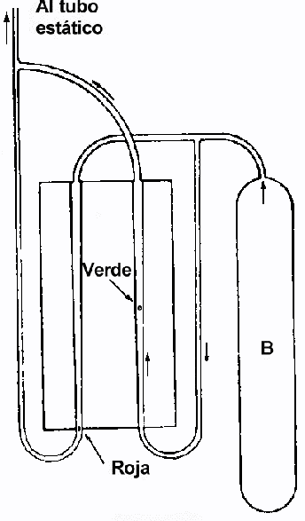
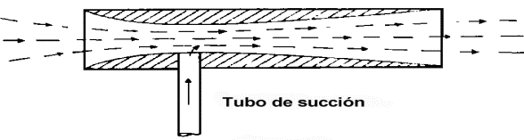

Teoría de Vuelo para Pilotos de Planeador
Stafford Allen
Capítulo VIII a
INSTRUMENTOS
En casi todos los planeadores, excepto en los primarios, hay una
cantidad de instrumentos montados en el panel, frente al piloto. En una máquina de alta
performance puede haber un numero alarmante de instrumentos, mientras que los planeadores
más modestos se manejan muy bien con escasamente dos o tres. No sugerirnos que usted
necesite convertirse en un experto reparador de instrumentos si desea volar, pero le será
de gran ayuda comprender cómo trabajan algunos de ellos.
En primer lugar, ¿qué instrumentos encontraremos? Los más
comunes son: velocímetro, altímetro, variómetro y brújula. Además, hay algunos
instrumentos destinados principalmente al vuelo a ciegas, incluyendo el indicador de giro,
horizonte artificial e indicadores de nivel.
Nos referiremos primero al grupo principal y los describiremos
en orden.
EL VELOCÍMETRO
El
velocímetro indica la velocidad del planeador. Es un pequeño instrumento con una aguja,
similar al velocímetro de un auto, y está calibrado en kilómetros, en millas por hora o
en nudos (knots). Este velocímetro indica la velocidad del planeador con relación al aire en
el cual se halla volando. No tiene nada que ver con la velocidad del planeador respecto al
suelo. Hablando con precisión, podemos afirmar que no siempre indica la velocidad real,
como veremos luego.
El
velocímetro mide la presión que se ejerce sobre un tubo enfrentado a la corriente de
aire. Esta presión es muy pequeña: a 80 kilómetros por hora equivale aproximadamente a
la de una columna de agua de 2,5
centímetros en un tubo U. Por lo tanto, el instrumento es muy
delicado. Dentro del instrumento hay una cápsula en forma de disco, con ondulaciones
concéntricas para hacerla más elástica, la cual se encuentra conectada por medio de un
tubo al extremo posterior de un tubo pitot. Este último generalmente se halla ubicado en
la parte superior de la nariz de la mayoría de los planeadores y consiste en dos tubos
apuntando hacia adelante. Uno de los tubos tiene el extremo abierto mientras el otro está
cerrado pero posee una serie de pequeños agujeros a lo largo. La presión originada por
el impacto del aire en la parte
Veamos
ahora lo relativo a los errores. El velocímetro es también denominado indicador de velocidad del aire, pero
esto es verdad solamente a nivel del mar. A todas las alturas sobre el nivel del mar el
velocímetro proporciona una cifra inferior a la real. Esto se debe a que el aumento de la
presión en el extremo descubierto del tubo varía directamente con la densidad del aire.
Ese hecho tiene relativamente poca importancia hasta que llegamos a grandes alturas. A
6000 metros una indicación de 55 kilómetros por hora equivale a 75 kilómetros por hora
reales. Esto no tiene tanta importancia en el mundo del vuelo a vela como la tiene para
los tripulantes de aviones a reacción. La resistencia y la sustentación son afectadas
exactamente de la misma manera por la densidad del aire: ambas disminuyen con la
disminución de la densidad. Por lo tanto, en un aire de menor densidad el planeador
entrará en pérdida a una velocidad real mayor, pero desde que el velocímetro no
proporciona una velocidad menor que la real, la cual está determinada por esa menor
densidad del aire, la pérdida se producirá a la velocidad normal, según la lectura del
velocímetro.
Por
ejemplo, un planeador entrará en pérdida a 55 kilómetros por hora a nivel del mar; a
6000 metros lo hará a 75 kilómetros por hora, pero en ambos casos el velocímetro
indicará 55 kilómetros. En forma similar, la velocidad de mínimo descenso o máximo
planeo será las mismas según el velocímetro a cualquier altura a pesar de que la
velocidad real aumenta con la altura. Por lo tanto, podemos considerar este error como una
ventaja positiva ya que evita al piloto mucho esfuerzo mental. En resumidas cuentas, el
instrumento nos indica algo más útil que la velocidad real respecto al suelo.
El
siguiente error que debernos considerar es el de posición. El aire que se encuentra
alrededor de un planeador es perturbado en alguna medida a cierta distancia por encima y
por debajo, así como por delante y por detrás. El único lugar satisfactorio para
colocar el tubo estático es el de unos 20 metros lejos del planeador, pero esto es
prácticamente imposible. El diseñador tiene un gran problema en encontrar el mejor lugar
para situar el tubo estático, pero cuando lo ha encontrado, debe también hallar en qué
medida la cercanía de las alas o el fuselaje afectan la lectura del instrumento. En
muchas cabinas se encuentra una pequeña tarjeta que proporciona las correcciones
requeridas a distintas velocidades. Este es un problema bastante complicado por el hecho
de que sólo a un ángulo de ataque determinado el aire afecta al tubo abierto
frontalmente. Sin embargo, se obtiene un resultado razonablemente bueno en muchos
planeadores ubicando el tubo pitot en la nariz. No debemos confundimos si vemos un solo
tubo en la nariz de un planeador. No se trata, en realidad, de un solo tubo sino de dos,
pero el que tiene el extremo cerrado ha sido colocado lejos del otro.
El tubo
pitot tiene una molesta tendencia a helarse y dejar de funcionar cuando se vuela en nube
en ciertas condiciones de temperatura. Algunas veces se instala un sistema de
calentamiento eléctrico para derretir el hielo, pero más comúnmente en la actualidad el
tubo abierto se orienta en sentido contrario y se instala en un pequeño recipiente, el
cual se ubica en la nariz del planeador. Este último tipo es más o menos inmune a
problemas de formación de hielo. Además, en la búsqueda de eficiencia en estos días el
tubo estático tiene una tendencia a desaparecer. Se lo reemplaza por dos agujeros
cuidadosamente ubicados en el fuselaje, uno a cada lado, para evitar errores debido a
derrapes. Si se elige adecuadamente la posición de estos agujeros, los mismos pueden
proporcionar una presión estática muy segura y, por supuesto, evitan la pequeña
resistencia que se origina en un tubo situado fuera del fuselaje.
Por
último, puede haber algunos errores en el velocímetro mismo. Tales errores deben
conocerse si se hacen presente y si el instrumento es utilizable deben ser tan pequeños
que puedan ser despreciados. Si se tienen dudas debe controlarse el instrumento.
Con todos
estos problemas de formación de hielo y de errores, resulta sorprendente que nadie haya
todavía producido algo mejor para indicar la velocidad. Nadie lo ha hecho, sin embargo.
Si usted cree que puede hacerlo, por favor, hágalo.
EL ALTÍMETRO
El
altímetro no indica la altura del planeador sobre el suelo. Mucha gente cree que esto es
lo que hace el instrumento. Todos llegan a comprender la verdad, pero algunos lo hacen por
el camino difícil. Podemos, por supuesto, encontrar la altura de nuestro planeador sobre
el suelo mediante el altímetro, pero para ello necesitamos utilizar nuestra inteligencia.
Para ver cómo puede ser esto, primero debemos entender cómo funciona el instrumento.
Dentro de
la caja del altímetro hay una cápsula parecida a la del velocímetro, excepto que en
este caso la cápsula se halla sin aire y cerrada herméticamente. Para evitar que se
aplaste por la presión del aire tiene un fuerte resorte. Si la presión atmosférica
varía, la cápsula será comprimida o se expandirá de acuerdo al incremento o
disminución de la presión exterior. Este movimiento de la cápsula es multiplicado por
medio de pequeñas palancas y engranajes e indicado por medio de una aguja en un dial. En
realidad muchos planeadores modernos tienen dos agujas, una para cientos y otra para miles
de metros o pies, pero el principio que hemos explicado es el mismo. Se trata, en
síntesis, de un perfecto y común pequeño barómetro, calibrado en metros (o pies) y con
una escala mucho mayor que el que probablemente tiene usted en su casa. La parte interior
de la caja del altímetro se halla conectada al tubo estático del pitot. Muchos pilotos
no dan importancia a esto y dejan el estático del altímetro conectado a la cabina, lo
cual no tiene mucha importancia desde que los cambios de presión que registra este
instrumento son muy grandes y pequeñas variaciones entre la presión exterior de la
cabina y dentro de la misma no tienen sino un efecto muy ligero en las lecturas del
instrumento.
Dado que
el altímetro trabaja midiendo la presión estática o atmosférica, cualquier cambio en
esa presión lo afectará. Para permitir al piloto ubicarlo en cero el altímetro tiene
una pequeña perilla la cual cuando se gira mueve la aguja o agujas. Si el piloto coloca
el instrumento en cero antes del despegue (reglaje QFE), la lectura del dial durante el
vuelo será una lectura real de su altura sobre el punto de partida. Supóngase,
por ejemplo, que trepa a 1500 metros; entonces el altímetro indicará 1500 metros. Si
ahora el piloto hace un vuelo de distancia y atraviesa una serie de sierras con una altura
de 450 metros,
el altímetro seguirá indicándole 1500 metros, aunque tendrá 1500 - 450 = 1050 metros
entre él y la cima de las sierras.
El piloto
dispone de una carta que le proporciona la altura de los distintos puntos del país, en
metros sobre el nivel del mar, y esos puntos se hallan unidos por una línea continua. Las
distintas alturas se señalan en las cartas con diferentes colores, de tal manera que el
piloto puede advertir de un vistazo la altura del terreno sobre el cual está volando y la
del que se encuentra por delante.
Puede,
asimismo, determinar en forma muy simple cuál es su altura sobre el suelo en cualquier
momento, partiendo de la base de que sabe exactamente dónde se encuentra. Muchos pilotos
cuando vuelan sobre el club y no intentan realizar vuelos de distancia, fijan su
altímetro en cero antes de despegar. El altímetro indica entonces la altura real sobre
el punto de partida. Sin embargo, cuando se realizan vuelos de distancia la práctica más
común aconseja, antes de despegar, fijar la altura correspondiente al punto de partida
sobre el nivel del mar (reglaje QNH), de tal manera que cuando se encuentre en el aire el
piloto se ahorrará una serie de cálculos mentales dado que el altímetro le
proporcionará la altura sobre el nivel del mar y sus cartas le indicarán también las
alturas sobre el nivel del mar.
Hay otra
fuente de error que debe tenerse en cuenta. A menudo, cuando se deja un planeador con el
altímetro en cero durante toda la noche, a la mañana siguiente encontramos que la aguja
indica 50 o
más metros. Esto se debe a que la presión atmosférica ha descendido durante la noche.
Si la presión aumenta el altímetro indicará -50 metros o menos. Ahora, si despegamos
luego de haber fijado el altímetro en cero, volamos varias horas y la presión
atmosférica vuelve a variar en la misma proporción, el altímetro no estará en cero
cuando aterricemos, no obstante hacerlo en el mismo lugar de donde partimos.
Afortunadamente, la presión atmosférica no varía mucho en pocas horas, pero en
condiciones de tiempo inestable debe esperarse que así ocurra. Esto obliga al piloto
consciente a echar un vistazo al mapa del tiempo antes de emprender un vuelo de
distancia largo para saber qué puede esperar.
Algunos
altímetros tienen una pequeña escala en el dial que indica la presión en milibares, la
cual se halla conectada a las agujas. Esto, en realidad, es un legado del vuelo con motor.
Su finalidad es que un piloto de avión que se está aproximando a su destino, luego de
llamar por radio al aeródromo y recibir la presión del lugar en milibares, pueda fijar
este dato en el altímetro, con lo que dispondrá de la altura real sobre su destino.
Hay en la
actualidad un altímetro que realmente proporciona la altura sobre el suelo. Se denomina
radioaltímetro y consiste en realidad en un radar que determina la distancia hasta el
suelo, basado en el principio del eco sonda. Sin embargo, necesita una fuente de
electricidad, pesa demasiado para nuestras posibilidades en un planeador y su precio lo
hace bastante inaccesible. No es para nosotros.
EL VARIÓMETRO
El
variómetro es el único instrumento verdaderamente importante para el piloto de un
velero. En realidad, podemos afirmar con propiedad que el vuelo de distancia tuvo que
esperar hasta la invención de un variómetro práctico y aun los mejores pilotos hoy en
día se encuentran casi indefensos sin un buen variómetro. La función de este
instrumento es indicar al piloto dónde asciende o desciende el aire con respecto a la
tierra. Es un instrumento peculiar para el mundo del vuelo a vela y si bien es cierto que
los aviones a menudo disponen de un indicador de ascenso y descenso, éste es algo poco
sensible y torpe comparado con nuestro variómetro.
Existen
muchos tipos distintos de variómetros y siempre hay alguien inventando uno nuevo, pero
casi todos ellos trabajan básicamente sobre el mismo principio. Este principio es el de
que si tenemos una botella de aire y nos elevamos o descendemos, la presión exterior a la
botella se hace mayor o menor que la interior, desde que la presión atmosférica
disminuye con la altura y viceversa. En consecuencia, a medida que nos elevamos el aire de
la botella tenderá a salir y cuando descendemos tenderá a entrar en ella. El variómetro
simplemente indica este pasaje de aire y lo mide, indicando cuán rápido está elevándose o bajando el
velero.
Figura 18 - Variómetro

La figura 18 indica el funcionamiento de uno de los tipos de variómetro usado (Cobb-Slater). B es una botella; en la práctica es un termo exactamente igual al que usamos para conservar caliente el te o el café. La razón de que se utilice un termo es para aislar el aire interior de cualquier cambio de temperatura que podría variar su presión. Este termo se halla conectado a dos tubos transparentes de plástico ligeramente cónicos, montados en el panel de instrumentos; una conexión va a la parte superior de uno de estos tubos y la otra a la parte inferior del segundo. Los otros dos extremos de estos tubos están conectados al estático del tubo pitot. Dentro de los tubos plásticos transparentes hay dos pequeñas bolitas, una de color rojo y la otra de color verde. Ahora imaginemos que el planeador en el cual este aparato está instalado comienza a ascender. La presión en el estático disminuye por lo que el aire trata de salir del termo. No puede hacerlo a través del tubo que contiene la bolita roja, puesto que ésta es empujada hacia abajo y lo obtura, pero en cambio puede ascender por el tubo que contiene la bolita verde y la empuja hacia arriba. Cuanto más rápido asciende el planeador, más rápido fluye el aire fuera del termo y más alto se eleva la bolita verde. La posición de la bolita proporciona una indicación del régimen de trepada y esto puede leerse en una escala marcada al costado de cada tubo transparente.Exactamente
lo mismo ocurre si el planeador desciende, excepto que en este caso el aire fluye hacia el
termo. Ahora el aire no puede pasar por la columna de la bolita verde, puesto que ésta es
empujada hacia abajo y cierra el camino, pero en cambio la bolita roja se eleva dejando
pasar el aire e indica el régimen de descenso en pies o metros por segundo. Si ambas
bolitas descansan en la parte inferior de los tubos, entonces el planeador no está
ascendiendo ni descendiendo. El estático en el tubo pitot se utiliza porque si dejamos el
instrumento conectado a la cabina, cualquier ligera variación en la presión interior del
planeador como la que puede producirse al abrir una ventanilla de ventilación, podría
causar considerables errores al igual que en el caso del velocímetro, ya que estamos
manejándonos con pequeñas variaciones de presión.
Últimamente
ha habido una invasión de variómetros eléctricos y alguien cree estar inventado algo
nuevo cada día. Sin embargo, el principio básico permanece igual. Tenemos un termo y
medimos el aire que sale o entra. El gran avance de los variómetros eléctricos es que no
tenemos que hacer que el aire mueva ningún pistón, bolita o aguja en su camino hacia
dentro o fuera del termo. Podemos dejarlo fluir libremente y medir su intensidad por medio
de algún sistema eléctrico, resistencia, termocupla o lo que se desee. En consecuencia,
el variómetro eléctrico puede hacerse mucho más sensible y de respuesta mas rápida a
los cambios de altura.
Lo que
necesitamos de un variómetro es que sea sensible, es decir, capaz de detectar pequeñas
variaciones de ascenso o descenso combinado con ausencia de retardo. Con esto queremos
significar que el variómetro deberá indicar que ascendemos tan pronto como el ascenso
comienza y mostrar que dicho ascenso ha terminado en cuanto la trepada deja de tener lugar
y, lo mismo, por supuesto, para el descenso. Concretamente, deseamos saber qué está
ocurriendo ahora, no que
estaba ocurriendo medio minuto antes.
Puede
parecer sorprendente que un instrumento basado en principios aparentemente tan primitivos
pueda cumplir su cometido. La realidad muestra que si lo hace. Si usted necesita
convencerse de ello póngase el termo bajo el brazo, sostenga el instrumento en sus manos,
conéctelo con un par de tubos de goma y suba y baje lentamente por una escalera. Se
sorprenderá al advertir su increíble sensibilidad. (Tal vez deberíamos recordar que
este experimento se facilita si previamente se saca el instrumento del planeador).
Los
principales errores en los variómetros se deben a las variaciones de la velocidad del
planeador. Realmente, este no es un error en sí, sino que el variómetro nos está
diciendo la verdad literal. Ello se debe a lo siguiente. En una térmica turbulenta a
menudo resulta difícil mantener constante la velocidad del planeador. El velero es
sacudido por la turbulencia y la nariz se eleva o baja ligeramente causando fluctuaciones
en la velocidad. Estas fluctuaciones pueden apreciarse como ligeras trepadas y picadas. El
variómetro muestra las picadas como descenso o
más probablemente como reducción del ascenso y
las trepadas como incremento
del ascenso, pero esto puede conducir a un error, aunque es la verdad literal
desde que los ascensos pueden o no tener lugar cuando la térmica acelera su ascenso y el
piloto busca de hallar la mejor parte de la térmica.
Para
solucionar esta dificultad muchos veleros han sido equipados con un venturi de energía
total, al cual se conectan los variómetros, en lugar de conectarlos al estático. Para
comprender cómo funciona este dispositivo, primero tenemos que echar una ojeada al
venturi. 
La figura
19 constituye un corte lateral de un venturi, así llamado en homenaje a su inventor. Se
trata, simplemente, de un tubo con un ligero estrechamiento o agolletamiento cerca de uno
de sus extremos; por lo tanto, comprende dos formas cónicas, una de ellas (la dirigida
hacia adelante) mucho más corta que la otra. Este pequeño tubo se sitúa en la parte
superior del planeador de tal manera que el aire fluya directamente a través del mismo.
Por lo tanto, el aire que pasa por la garganta de este tubo sufre una fuerte reducción de
la presión y si conectamos un tubo a dicha garganta, el venturi absorberá aire a través
del mismo. Cuanto más rápido se mueva el aire en el venturi, más fuerte será la
succión.
A primera
vista esto parecerá muy sorprendente. Sin embargo, cualquier fluido al que se lo hace
mover rápidamente sin agregarle energía, pierde en presión lo que gana en velocidad.
Esto se conoce como el teorema de Bernoulli. Será obvio que el aire se mueve mucho más
rápido a través de la garganta del venturi que a través del extremo abierto ya que el
área es mucho menor. Las entradas del venturi están suavizadas como para que el ingreso
y la salida del aire se vean tan libres de turbulencia como sea posible.
Partiendo
de la base de que un tubo venturi produce una succión, ¿qué significa esto para
nosotros? En primer lugar, el venturi de
energía total para un variómetro debe estar cuidadosamente hecho a
fin de que su succión a cualquier velocidad sea exactamente el equivalente de la presión
que se ejerce en el extremo abierto del tubo pitot. Ahora conectemos el variómetro al
venturi de energía total en lugar del estático del tubo pitot, dejando las conexiones al
termo y demás, exactamente como antes. Luego remolquemos el planeador a 75 kilómetros
por hora. El venturi comienza de inmediato a succionar aire del termo hasta que la
presión de éste iguala a la presión en la garganta del venturi. Durante este tiempo la
bolita verde del variómetro indica ascenso aunque
no haya tenido lugar ningún ascenso. En adelante, mientras la velocidad se mantenga a 75
kilómetros por hora el variómetro se comportará exactamente como antes, indicando
ascenso o descenso. Pero si la velocidad se modifica, entonces el venturi comienza a
interferir. Imaginemos que mientras un velero se encuentra virando y ascendiendo a 1 metro
por segundo en una térmica el piloto inadvertidamente permite que la velocidad fluctúe
entre 75 y 90 kilómetros por hora. Mientras el planeador gana velocidad el régimen de
ascenso disminuye desde que la velocidad extra es absorbida por la suave picada. Por lo
tanto, la velocidad a que el aire se desplaza fuera del termo normalmente disminuirá y la
bolita verde indicará menos ascenso, tal
vez medio metro por segundo. Sin embargo, debido al incremento de la velocidad la succión del
venturi se acrecienta y este aumento del flujo del aire del termo y la bolita verde
indican el mismo régimen de ascenso anterior (1 metro por segundo).
Mientras
el planeador pierde velocidad al ascender, trepará más rápido que antes, digamos 1,5
metros por segundo, pero como la disminución de la velocidad causa una disminución de la
succión en el venturi, el flujo extra del aire del termo se compensa y la bolita verde
muestra el mismo régimen de ascenso, es decir, un metro por segundo.
Por lo
tanto, el venturi de energía total elimina los efectos de las variaciones de velocidad
sobre el variómetro o, como algunos pilotos expresan, elimina las térmicas de palanca. Esto
es muy útil, desde que el piloto sabe que si la bolita verde indica aumento de ascenso en
una parte de su viraje, este aumento de ascenso realmente se debe a que el planeador se
encuentra en la parte más activa de la térmica y no a un falso registro debido a un
movimiento hacia atrás de la palanca.
Cuando
existe posibilidad de formación de hielo el venturi puede bloquearse, por lo que para
prevenir este problema y el resultante de la entrada de agua en el instrumento,
generalmente se coloca una pequeña llave de desagote entre el venturi y el variómetro.
Cuando esta llave se abre posibilita el drenaje del agua que hubiera entrado y además
permite al instrumento funcionar como un variómetro común nuevamente, utilizando la
presión de la cabina. Como ya hemos dicho, esto no es lo mismo que utilizar la presión
estática, por lo que el piloto no debe sorprenderse si, volando con la llave de drenaje
abierta, el variómetro se comporta en forma un tanto rara cuando se abre o cierra la
ventanilla de ventilación o cuando el velero derrapa o desliza, desde que estos
desplazamientos pueden provocar la salida o entrada de aire en la cabina y la consiguiente
modificación de la presión. Hoy se usa un simple tubito con ranuras u orificios
apropiadamente hechos que cumple la misma función.
Hay un
tipo distinto de sistema de energía total. Es el de capacidad variable. En lugar de
aplicar la succión a la parte estática del variómetro se utiliza la presión estática
común, pero entre el instrumento y el termo se incluye un depósito extra de pequeña
capacidad. Este depósito tiene una fina membrana en uno de sus lados y la presión
proveniente del tubo pitot se aplica al otro lado de la membrana. Por lo tanto, los
cambios de velocidad hacen que la capacidad total varíe ya que la presión del tubo pitot
hace que la membrana sufra una deflexión. Esto produce exactamente el mismo efecto que si
aplicáramos el venturi a la parte estática del instrumento y tiene la ventaja de que no
hace falta un tubo situado al aire y, desde que el tubo pitot no se hiela, el variómetro
no será afectado por el hielo.
En
condiciones de suma turbulencia el sistema de energía total puede proporcionar
indicaciones muy raras. Esto se debe al hecho de que el venturi no puede distinguir entre
un aumento de velocidad debido a una picada y otro debido al aumento por la turbulencia.
En ambos casos tiende a elevar la bolita verde. En tales condiciones puede ser mejor abrir
la llave de drenaje y volver a la operación normal, teniendo esto en cuenta mentalmente.
Las ventajas superan de lejos estos pequeños problemas y pocos pilotos que han utilizado
un variómetro de energía total no desean disponer del mismo nuevamente.
¿Por qué
el curioso nombre de energía
total? Lo que el instrumento está haciendo para nosotros es llevar una
especie de cuenta bancaria de nuestro stock de energía. Si convertimos parte de nuestra
altura en velocidad extra, el variómetro dice: energía total, sin variación, mientras
que el variómetro común diría: pérdida de altura. Si nuevamente convertimos nuestra velocidad extra en altura, el
variómetro de energía total dirá: energía total, sin variación, mientras
que el variómetro común diría: ganancia de altura.
Todas
estas situaciones son reales, pero en el caso del variómetro de energía total el
instrumento tiene un ojo puesto en la energía cinética o la energía debida a la
velocidad, así como en la energía potencial, o energía debida a la altura y nos lo
acredita o debita de acuerdo al aumento o disminución de la velocidad. El variómetro
común nos indica cómo está cambiando nuestra energía potencial o debida a la altura.
El variómetro de energía total nos indica cómo cambia nuestra energía cinética y
potencial: en una palabra, nuestra energía total.
LA BRÚJULA
El
velocímetro, el altímetro y el variómetro pueden considerarse los instrumentos básicos
de nuestros planeadores y puede lograrse una enorme cantidad de horas de vuelo solamente
con estos tres.
Para un
vuelo de distancia importante necesitaremos disponer de una brújula pero desde que ésta
es similar a cualquier otro tipo de brújula magnética, no investigaremos mucho este
aspecto. No obstante, su instalación debe ser efectuada por una persona competente. Esto
implica colocar el planeador en varias posiciones observando las indicaciones de la
brújula y corrigiendo sus errores tanto como sea posible. Ello se debe a que el metal de
la estructura del planeador puede, en algunos casos, afectar las indicaciones de la
brújula. Cuando la brújula ha sido corregida todo
lo que sea
posible, los errores deben anotarse y tenerse a la vista en una tarjeta, en el panel de
instrumentos. Los métodos de corrección difieren pero el más usual es el de ubicar
pequeños imanes dentro de la caja de la brújula o por medio de tornillos que desplazan
los imanes ubicados en el recipiente que la contiene.
Volver Arriba